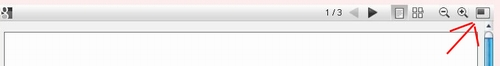

Stämme und ethnische Gruppen Kenias
-
-
-
Hi,
ja, kann möglich sein, je nach Browser halt, die Macher der verschiedenen Browsers stammen halt leider scheinbar aus einer anderen Zeit..., jeder Browser hat im Jahre 2009 leider noch verschiedene Stärken und Schwächen.
Ich rate so oder so zu Firefox, der Neuste kann nun als Beispiel alle Video und Mediadateien anzeigen, unabhängig von den Plugins, die man installiert hat.
Ich denke mal @Joe, du nutzt den Internet-Explorer.
Habe es mit Diesem eben mal getestet, seltsam, auf einem meiner Laptops wird das pdf angezeigt, auf dem anderen nicht, obwohl identische IE.
Was aber bei beiden geht, ist die Vollansicht des pdf-Files, klicke mal oben in der Leiste auf folgenden Button:

Da sollte dann ein neues Fenster aufgehen, mit der Vollansicht des pdf-Files, da müsste dann das pdf-Plugin vom IE greifen bzw. über google-docs müsste das dann funzen.
Bitte gib Meldung, ob das so klappt
admin
mzungu.info -
Hallo,
habe es auch gerade mal getestet, also, der einzige Browser, der da zickt, ist der IE, aber, wie admin sagt, die Vollansicht funzt.
Erfolgreich getestet mit folgenden Browsern:
Opera 10.01
Google Chrome 3.0.195.27
Google Chrome 3.0.195.32
Firefox 3.0.15
Firefox 3.5.5
Grüße mzungu -
OKIEK
Eine Gruppe ( rund 2 Dutzend Gruppen ) von Jägern und Sammlern in West - Zentral - Kenya sowie Tansania . Werden von den Massai auch Torobbo oder Ndorobo genannt nach der abwertenden Bezeichnung Il Torobbo die , die Massai für Jäger und Sammler , sowie arme Menschen ohne Viehbesitz verwenden . Leben in den Gebieten des Mau Waldes , Tindiret und nördlich von Nakuru .
POKOMO
Eine Bantu Volksgruppe am Tana Fluss in der Provinz Coast in Kenya , leben von Landwirtschaft und Fischerei . Die Bevölkerungsanzahl liegt bei ca. 50 000 . Heute sind sie in zwei Gruppen aufgeteilt die Upper Pokomo leben am Oberlauf des Flusses die Lower Pokomo leben am Unterlauf .
SAKUYE
Eine Bevölkerungsgruppe die in der Nordostregion von Kenya lebt . Heutige Sprache der Borana Dialekt der Oromo Sprache . Sie leben als Kamelnomaden sind aber zum Großteil sesshaft geworden .
RENDILLE
Leben im Norden Kenyas südöstlich des Turkanasees in der Kaisut Wüste . Ca. 30 000 Menschen mit den Somali verwandt und mit den und mit den Samburu verbündet und von den Borana kulturell beeinflusst .Immer locker vom Hocker . -
KURIA
Eine Gruppe die östlich des Victoriasees im Grenzgebiet von Tansania und Kenya lebt . Von den 400 000 lebt ein Drittel davon in Kenya in der Region um Nyanza insbesonders im Baringo Distrikt . Sie sprechen eine Bantusprache waren Rinderhirten betreiben heute auch Ackerbau die Nächstverwandte Volksgruppe sind die Kisii und die Luhya .
TUGEN
Eine kleine Ethnie die in Kenya im Baringo Distrikt um die Tugen Hills lebt . Sie gehören der Volksgruppe der Kalenjin an . Meist Viehhirten sind auch als Imker berühmt .
NILOTEN
Darunter versteht man eine Reihe von afrikanischer Völker die nilotisch sprechen . Ursprünglich Bauern und Viehzüchter kommen sie aus dem Südsudan und haben sich von dort vor allem nach Süden ausgebreitet . Heute leben sie neben Sudan , in Uganda , Tansania , Äthiopien und Kenya .
IK
Ein Bergvolk im Nordosten Ugandas sowie in Kenya . In Kenya leben nach Schätzungen 1 200 Ik . Sie sind auch unter dem Namen Teuso bekannt . Berühmt geworden durch die Studie des Anthropologen Colin Tumbull der von 1965 bis 1966 zwei Jahre bei den Ik lebte .
HAWIYE
Sie sind ein Clan der Somali in Süd - und Zentral - Somalia ansäßig sowie im benachbarten Kenya .Immer locker vom Hocker . -
EL MOLO
Sie sind zahlenmäßig eine kleine Volksgruppe und leben in der Ostregion Kenyas am südöstlichem Ufer des Turkanasees . 2007 wurde die Zahl der ethnischen El Molo auf 700 geschätzt . Sie sprechen heute die Sprache der Verbündeten Samburu oder das Turkana .
GABBRA
Die Gabbra eine Ethnie die in der Chalbi Wüste im Norden Kenyas und Süd-Äthiopiens traditionell als Kamelnomaden leben . 1970 wurden sie auf 30 000 geschätzt . Sie sprachen ursprünglich eine somaloide Sprache die dem heutigen Rendille ähnlich ist . Heute sprechen sie den Dialekt der Oromo . mit den Borana , Rendille sind sie durch komplexe Beziehungen verbunden .
BORANA
Eine Untergruppe der Oromo ca. 4 Millionen Menschen die meisten leben im Süden Äthiopiens , ca. 150 000 bis 175 000 leben in der Eastern Region in Kenya und wenige leben in der Region Gedo in Somalia .
DASSANETCH
Dies ist eine Bevölkerungsgruppe die am Turkanasee in Kenya und Äthiopien lebt . Sie betreiben Viehzucht und Ackerbau an den Ufern des Turkanasees .
NANDI
Ein kalenjinsprachiger Stamm der im Westen Kenyas lebt . Standen in dem Ruf grausame und verwegene Krieger zu sein , lebten im Hügelland nordöstlich des Victoriasees . Ein Teil des Stammes lebte im 19Jh. in den Höhlen am Mount Elgon .Immer locker vom Hocker . -
-
-
hallo, da ist was falsch,die Kamba sind Bantus und nicht mit den Maasai, die ja Nilotes sind, verwandt. ausserdem sind sie eine friedliche tribe, Embus leben am Mt. Kenya, in der Stadt Embu und in der Naehe rundherum. Du hast die Samburus, Turkanas, Pokot, Boranas und Kisii vergessen.
-
Teilen
- Facebook 0
- Twitter 0
- Google Plus 0
-
 Reddit
0
Reddit
0
-
Tags
- Kenianische Stämme
- Nigros
- Nilotics
- Bantus
- Embu
- Kalenjin
- Kamba
- Kikuyus
- Kisii
- Luhyas
- Luos
- Masai
- Meru
- Mijikenda
- Samburu
- Somali
- Taita
- Tansanier
- Teso
- Turkana
- Ugander
- Ethnische Gruppen Kenias. Ajur
- Bajun
- Basuba
- Boni-Sanye
- Boran
- Briten
- Bulji
- Dasnachi-Shan
- Degodia
- Dorobo
- Elmolo
- Gabra
- Gosha
- Gurreh
- Hawiyah
- Inder
- Kenianische Araber
- Kenianische Asiaten
- Kenianische Europäer
- Kikuyu
- Kuria
- Luhya
- Luo
- Mbere
- Njemps
- NR
- Ogaden
- Orma
- Andere Afrikaner
- Andere Araber
- Andere Asiaten
- Andere Europäer
- Andere Kenianer
- Pakistanis
- Pokomo
- Rendile
- Rest-NEC
- Sakuye
- Somali-so sta
- Swahili-Shira
- Taveta
- Tharaka
- Unbekannt